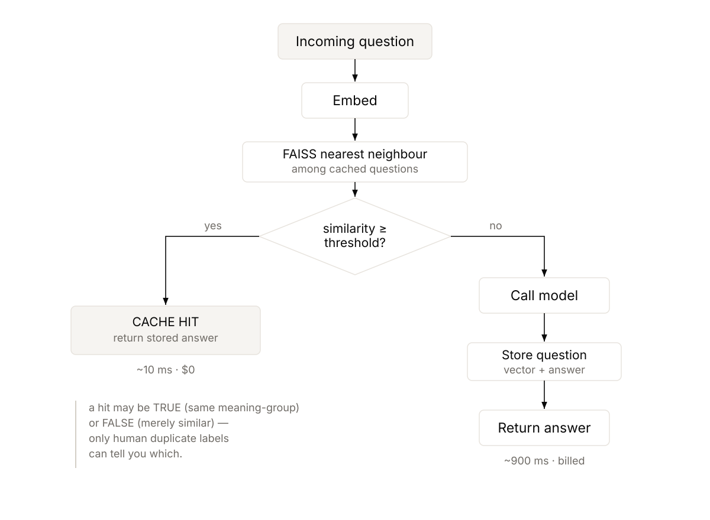
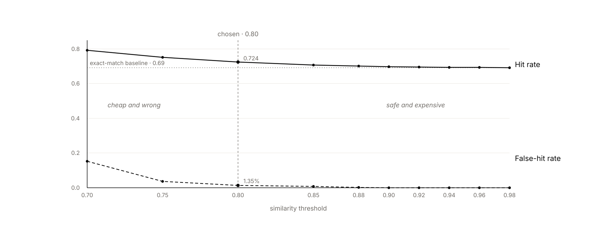

Matching questions by meaning cuts cost sharply, and starts answering questions nobody asked.
An exact-match cache and a semantic cache over the same request stream, measured for hit rate, latency, and model calls avoided. Because meaning-level matching can serve an answer to a merely-similar question, it carries a false-hit rate, scored against Stack Exchange's human-confirmed duplicates. At the chosen threshold it lifted the hit rate to 0.724 from 0.691, held false hits to 1.35%, and cut latency 3.5×.
In a high-volume question-answering product, a large share of traffic re-asks something already answered, just worded differently. "how do I reset my password", "password reset?", and "cant log in need to reset pw" are three spellings of one question, and each is a paid, slow model call producing an answer that already sits in the last hour's logs.
An exact-match cache catches only the literal repeats, so it topped out at a 0.691 hit rate here. Matching on meaning collapses the variants onto one cached answer and lifts the hit rate, but it introduces a failure the exact cache never had: it can match something that is merely similar and serve the wrong answer, fluently, with nothing logged.
The question was how much of that traffic is reclaimable and at what risk. An exact cache is safe and weak; a semantic cache is powerful and needs a way to bound how often it is wrong.
Every request is a single threshold decision: embed the question, find its nearest cached neighbour, and if the similarity clears the threshold return the cached answer in about ten milliseconds at no cost; otherwise call the model and add the new question and answer to the cache. The threshold is the entire design.

Every request is a threshold decision. The threshold is the entire design, at 0.80 it bought a 3.5× speedup for a 1.35% false-hit rate.
Scoring a cache needs a definition of which questions are really the same, taken here from Stack Exchange's
human-marked duplicates. Stream, do not load: the 293 MB Posts.xml exhausts a
16GB machine if parsed whole, so iterparse with elem.clear() keeps memory flat
regardless of file size. Duplicate links become meaning-groups: links are pairwise, but
A↔B and B↔C means all three are one question, so the groups are the connected components of that graph
(union-find), and 1,945 pairs resolved into the ground-truth groups everything else is scored against.
Cosine on an interpretable scale: BGE vectors are L2-normalised into an inner-product
index, so the threshold and its sweep read directly off [-1, 1].
Every metric here, hit rate, latency, calls avoided, false-hit rate, depends on which question matched and never on the answer's text. Paying for real generations would change what the notebook costs to run and none of its results. This project needs no API key at all.
At the chosen threshold of 0.80, semantic caching lifted the hit rate to 0.724 from the exact-match baseline of 0.691, avoided 72.4% of model calls, and held the false-hit rate to 1.35% inside a 2% budget, for a 3.5× latency improvement on a 5,000-request stream. The operating point is a choice, not a default, and the sweep below shows why.
The threshold sweep, a representative slice of the full 10-point sweep:
| Threshold | Hit rate | False-hit rate |
|---|---|---|
| 0.70 | 0.792 | 0.154 |
| 0.75 | 0.752 | 0.037 |
| 0.80 | 0.724 | 0.0135 |
| 0.85 | 0.706 | 0.0068 |
| 0.90 | 0.698 | 0.0009 |
| 0.92 | 0.695 | 0.000 |

Hit rate and false-hit rate move together. The loosest threshold has the best hit rate and a 15% false-hit rate, choosing a threshold is choosing how much wrongness a saving is worth.
This is the project's sharpest result, and it is in the data above: the loosest threshold (0.70) produces the best hit rate (0.792) and the lowest latency, and a 15.4% false-hit rate. Judged on every metric a normal dashboard shows, the worst configuration looks like the best one. The failure is silent: a fluent, confident, cached answer, with nothing logged. This is why the false-hit rate had to be built before the threshold could be chosen, and why the chosen point is 0.80, not 0.70.